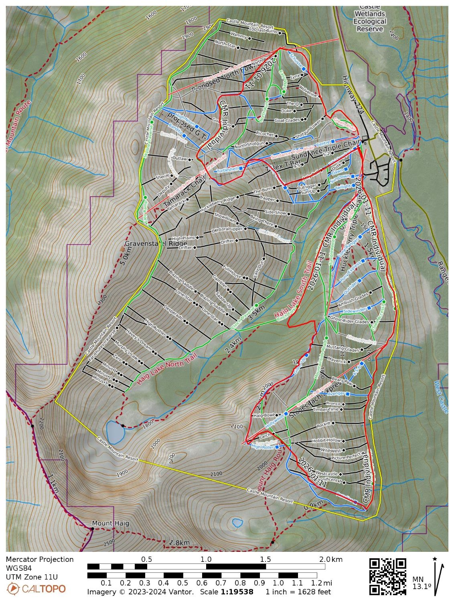

The 2027 race runs January 8 to 10. Start times, courses and the other details below follow the most recent edition and are subject to change, including on race day for weather and snow conditions.
Course maps and GPS tracks are approximate. They are provided for general information and planning only, and may not show the exact race route, current terrain or hazards.
Courses are set and marked on race day and can change at any time, before or during the race, for snow, weather, avalanche conditions or resort operations. Always follow the course flagging and the instructions of race officials and volunteers. Do not rely on a map, GPS track or device to navigate the course.
Three days of ski mountaineering racing: the Vertical on Friday, January 8, the Sprint on Saturday, January 9, and the Individual on Sunday, January 10, 2027. Race one, two or all three. All races follow ISMF sport regulations.
Divisions
- Adult (18+): Competitive and Recreational
- Junior (under 18)
- Masters (35+)
Vertical · Sprint · Individual · On course · Course maps
Friday, January 8: Vertical Race
One climb, start to finish. 449 m (1,473 ft) of elevation gain over about 1.5 km.
Route
- Start at Whiskey Jack
- Follow Jelly Roll
- Right into Easy Street
- Trend up, under the T-Bar, and left towards South Bowl
- Finish near the top of the T-Rex T-Bar
Schedule
- 3:30 to 3:45 pm: bag drop and start line instructions
- 4:00 pm: race start
Required gear
Helmet. Pack warm clothing into a bag for pickup at the finish.
- Race route
- Easy
- Intermediate
- Advanced / expert
- Lifts
Approximate route only. The race-day course is set by the flagging on the snow and may change for conditions. Read the full notice.
Saturday, January 9: Sprint Race
A short, fast course on Whiskey Jack with two uphill skinning sections, one boot-pack and one downhill slalom section. About 45 m (150 ft) of gain and loss per lap, raced as qualifiers, heats and finals.
Schedule
- 10:00 am to 12:00 pm: course open for warm-up; bib assignments and waivers in the Day Lodge
- 1:00 pm: technical briefing (be at the start corral before 1:00 pm)
- 1:30 pm: qualifiers
- 2:00 pm: heats
- About 2:30 pm: finals
Required gear
- Skis or splitboard with bindings
- Skins
- Poles
- Boots
- Rucksack
- Helmet
- Gloves covering the whole hand to the wrist
- Hat, toque or similar
- Warm layers for between heats
Sunday, January 10: Individual Race
The main event: a full ski mountaineering course across Gravenstafel Ridge and Mount Haig, with skinning, a boot-pack, and descents featuring Castle's iconic chutes.
1,505 m
About 4,937 ft of elevation gain and loss over six legs.
1,170 m
About 3,837 ft of elevation gain and loss over roughly 12 km.
The route
- Start below the Green Chair at the base of Castle Mountain Village and climb about 894 m
- Summit North Peak, with a short descent and boot-pack
- From the top of the Red Chair to the Chutes gate, descend High Rustler to the valley bottom (about 772 m)
- Follow the Cinch Fork trail to the transition area, skins back on, and climb to Haig Ridge
- Recreational racers descend from Haig Ridge to the finish
- Competitive racers continue up the Haig Ridge cat road to the cat ski boundary, then descend and follow Round Up Traverse to the finish
Schedule
- 9:45 am: report to the start area for beacon check and pre-race instructions, including route changes and cut-off times
- 10:00 am: race start, all divisions
- 12:30 pm: cut-off at Haig Ridge for the competitive course
- 2:00 pm: provisional results and appeal period
- 3:00 pm: awards for all three races, including the Wright Stuff Award silent auction
The finish is at the base of Whiskey Jack. Volunteers move racer bags from the start to the finish.
Required gear
- Skis or splitboard with brakes or leashes
- Skins, poles and boots
- Avalanche transceiver
- Snow shovel
- Snow probe (minimum 2.4 m)
- Survival blanket
- Whistle
- Helmet
- Rucksack
- Sunglasses
- Gloves covering the whole hand to the wrist
- Hat, toque or similar
- Upper body: at least 3 long-sleeved layers, one a wind stopper
- Lower body: at least 2 layers of long pants, one a wind stopper
On course
- Race number secured to your right thigh
- Helmets are mandatory
- Skis on your pack for all boot-pack sections
- Poles flat on the ground during transitions
- Green flags mark up tracks, red flags mark down tracks, yellow flags mark boot-packs
- Follow volunteer instructions at every transition
- It is mandatory to stop and help any racer in distress
- Follow the Alpine Responsibility Code at all times
- If you cannot finish, report to a transition volunteer and to the finish area
Course maps
The topographic map shows the recreational Individual course from the most recent edition. 2027 courses will be posted here once confirmed.
Approximate route only. The race-day course is set by the flagging on the snow and may change for conditions. Read the full notice.

